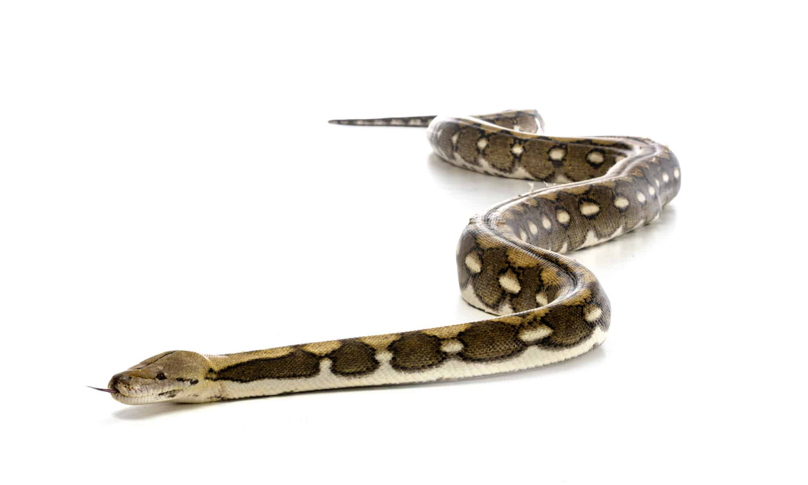
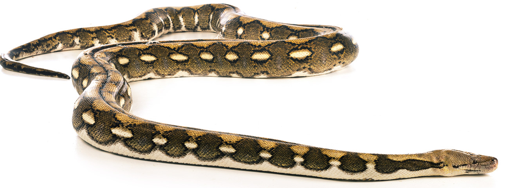

Reticulated Pythons are the longest snake in the world. The largest specimen was recorded at almost 33 feet long. Despite their size, they are semi-arboreal and spend significant time climbing trees.

Reticulated Pythons are popular pets amongst reptile keepers. While some enjoy the challenge of raising a 10+ foot snake, others settle for dwarf and superdwarf localities. That way, they can admire the beautiful pattern and interesting behavior of the Reticulated Python without the commitment of caring for a large snake.
Reticulated Pythons are constrictors, meaning they hunt by striking and quickly wrapping around their prey. If their meal is especially large, they can go multiple weeks before needing to eat again. Reticulated pythons are non-venomous, meaning they do not possess venom glands like other species of snakes.
Click on a species to learn more about it!